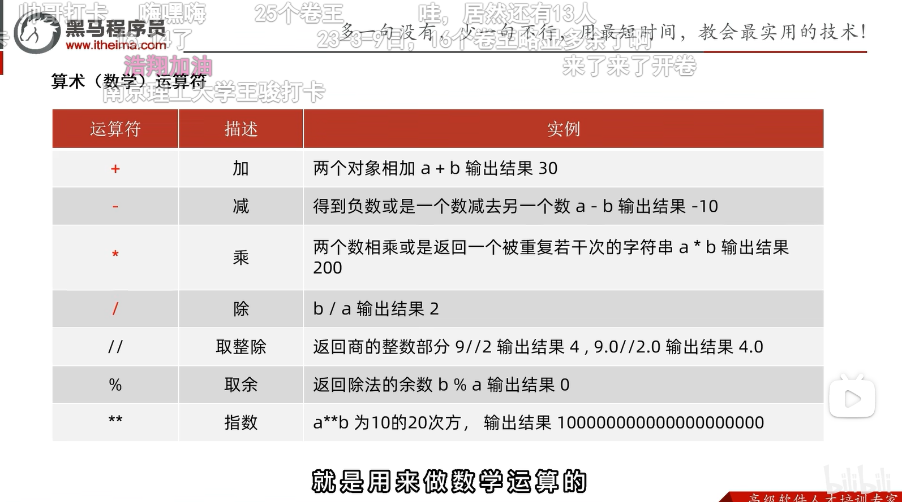
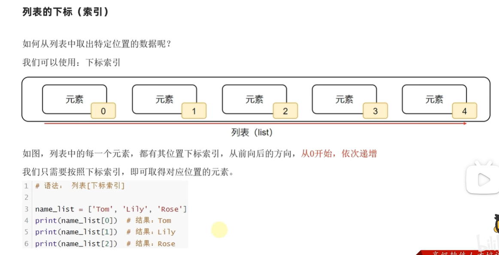
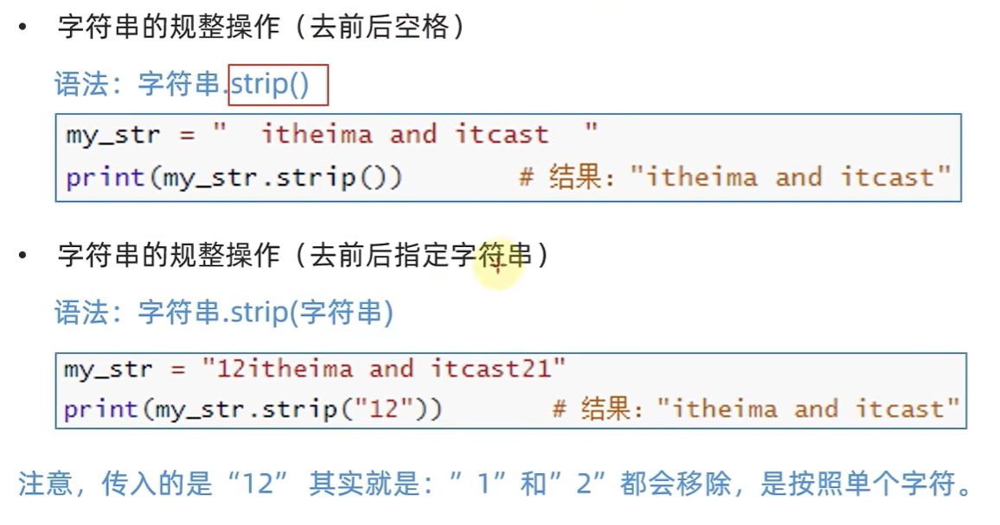
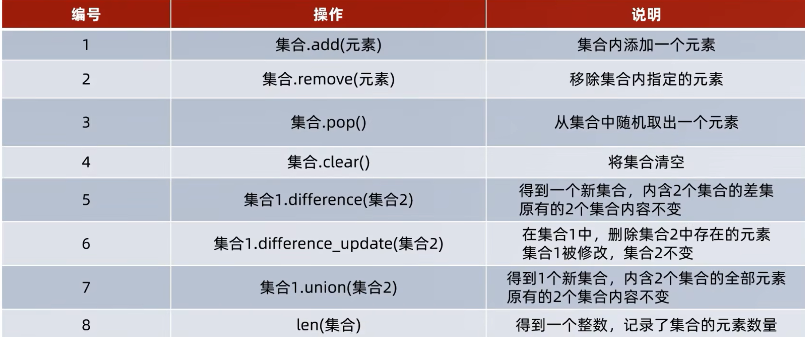

python笔记
pycharm常用快捷键
| ctrl+alt+s | 打开软件设置 |
|---|---|
| ctrl+d | 复制当前行代码 |
| shift+alt+上/下 | 将当前行代码上移或下移 |
| ctrl+shift+f10 | 运行当前代码文件 |
| shift+f6 | 重命名文件 |
| ctrl+a | 全选 |
| ctrl+f | 搜索 |
| ctrl+alt+L | reformat code |
| ctrl+alt+shift+L | reformat file |
| ctrl+/ | 注释选中行 |
1print语句
print()默认结尾换行,如果不需要换行可以添加end=''
1print("hello", end='')2print("world")xxxxxxxxxx11helloworld
xxxxxxxxxx21print("hello\tworld")2print("hello\nworld")xxxxxxxxxx31hello world2hello3world
2.1字面量python六种数据类型
xxxxxxxxxx31print(999)2print(114.514)3print("hello world")2.2注释
xxxxxxxxxx71"""2这个是多行注释3"""4# 这个是单行注释（#号和注释内容一般建议一个空格隔开）5'''6这个也是多行注释7'''2.3变量
xxxxxxxxxx31money = 102money = money - 53print("余额为", money, "元")xxxxxxxxxx11余额为 5 元
2.4数据类型
xxxxxxxxxx41string_type = type("hello world")2int_type = type(666)3float_type = type(114.514)4print(string_type, int_type, float_type)xxxxxxxxxx11<class 'str'> <class 'int'> <class 'float'>
2.5数据类型转换
| 语句(函数) | 说明 |
|---|---|
| int(x) | 将x转换为一个整数 |
| float(x) | 将x转换为一个浮点数 |
| str(x) | 将对象x转换为字符串 |
万物皆可转字符串,只有字符串是数字时才能将字符串转数字
xxxxxxxxxx101float_str = str(114.514)2print(type(float_str), float_str)3num = int("11")4print(type(num), num)5num2 = float("1919.810")6print(type(num2), num2)7fnum = float(11)8print(type(fnum), fnum)9inum = int(114.514) # 不会四舍五入，直接取整10print(type(inum), inum)xxxxxxxxxx51<class 'str'> 114.5142<class 'int'> 113<class 'float'> 1919.814<class 'float'> 11.05<class 'int'> 114
2.6标识符
标识符命名只允许出现:
- 英文字母
- 中文(不推荐)
- 数字(不可以开头)
- 下划线_
2.7运算符



xxxxxxxxxx41print(1/3)2print(-17/4)3print(-17//4)4print(10//4)xxxxxxxxxx410.33333333333333332-4.253-542
整除取整方向默认为
Python 中一般以新行作为语句的结束标识，可以使用 \ 将一行语句分为多行显示。如下所示：
xxxxxxxxxx61a = 1282b = 10243c = 5124d = a + \5 b - \6 c如果包含在 []、{}、() 括号中，则不需要使用 \。如下所示：
xxxxxxxxxx51arr = {2 a,3 b,4 c5}2.8字符串的三种定义方式
xxxxxxxxxx101# 单引号定义法2name1='hello'3# 双引号定义法4name2="hello"5#三引号定义法6name3="""7hello8world9"""10print(name3)xxxxxxxxxx31hello3world
单引号定义法,可以内含双引号
双引号定义法,可以内含单引号
可以用转义字符\解除引号的效用
2.9字符串拼接
xxxxxxxxxx41s1 = "abcd"2s2 = "defg"3s3 = s1 + s24print(s3)xxxxxxxxxx11abcddefg
2.10字符串格式化
xxxxxxxxxx61num = 1145142s = "abcde"3message1 = "%s你好世界" % s4print(message1)5message1 = "%s你好世界%s" % (s, num)6print(message1)xxxxxxxxxx21abcde你好世界2abcde你好世界114514
xxxxxxxxxx51s = "绩点"2gpa = 0.13num = 6664message = "%s高达%f,老铁%d" % (s, gpa, num)5print(message)xxxxxxxxxx11绩点高达0.100000,老铁666
字符转ASCII和ASCII转字符串
xxxxxxxxxx21print(ord("a"))2print(chr(97))xxxxxxxxxx21972a
字符串的大小写转化
xxxxxxxxxx91# title将首字母变成大写,其余小写2str = "wHat a beaUTIFul GIrl!!"3print(str.title())4# upper将所有字母变成大写5str = "Cpp Is The Best Programing Language"6print(str.upper())7# lower将所有字母变成小写8str = "I HATE PYTHOn"9print(str.lower())xxxxxxxxxx31What A Beautiful Girl!!2CPP IS THE BEST PROGRAMING LANGUAGE3i hate python
2.11数字精度控制

2.12字符串格式化的一种快速写法
格式:f”内容{变量}”(不关心精度控制)
xxxxxxxxxx51s = "绩点"2gpa = 0.13num = 6664message = f"{s}高达{gpa},大佬{num}"5print(message)xxxxxxxxxx11绩点高达0.1,大佬666
2.15input语句
xxxxxxxxxx21name = input("你是谁？")2print("ohhhhhhh!您就是那位著名的%s" % name)xxxxxxxxxx21你是谁？练习时长两年半的个人练习生2ohhhhhhh!您就是那位著名的练习时长两年半的个人练习生
input默认接受类型为string字符串
3条件语句
bool类型表示逻辑,True记作1,False记作0
python中的与或非: and or not
xxxxxxxxxx31num1 = 112num2 = 203print(f"11>20结果是{11 > 20},类型为{type(11 > 20)}")xxxxxxxxxx1111>20结果是False,类型为<class 'bool'>
xxxxxxxxxx71num = int(input())2if num < 10:3 print(f"{num}<10")4elif num <= 100:5 print(f"{num}<=100")6else:7 print(num)xxxxxxxxxx2120220<=100
xxxxxxxxxx61num = int(input())2if num <= 100:3pass # pass 是空语句，它不做任何事情，一般用做占位语句，作用是保持程序结构的完整性。4else:5print(num)6
4.1循环语句while
xxxxxxxxxx61x = 12add = 03while x <= 100:4 add += x5 x += 16print(add)xxxxxxxxxx115050
4.2循环语句for
for 临时变量 in 序列类型:
字符串和range语句生成的都是序列类型
xxxxxxxxxx71s = "abcdef"2for ch in s:3 if ch == "a":4 continue5 if (ch == "e"):6 break7 print(ch)xxxxxxxxxx31b2c3d
range(num)
获得一个从0开始,到num结束的数字序列
range(5)取得的数据是[0,1,2,3,4]
range(num1,num2)
获得从num1开始,到num2结束的数字序列(不含num2本身)
range(5,10)取得的数据是[5,6,7,8,9]
range(num1,num2,step)
获得从num1开始,到num2结束的数字序列(不含num2本身)
数字间的步长,以step为准(默认为1)
例如,range(5,10,2)取得的数据为[5,7,9]
xxxxxxxxxx21for x in range(5, 11, 2):2 print(x, end=' ')xxxxxxxxxx115 7 9
xxxxxxxxxx31for i in range(10, 0, -1):2 print(i, end=' ')3print()xxxxxxxxxx1110 9 8 7 6 5 4 3 2 1
reduce代替for循环
reduce函数在python2中是个内置函数，在python3中被移到functools模块中。
xxxxxxxxxx61from functools import reduce2def add(x,y):3 return x+y4ar=[1,2,3,4,5]5accumulate=reduce(add,ar)6print(accumulate)xxxxxxxxxx1115
解释: 1+2+3+4+5=15
作用:它用于对一个可迭代对象进行累积操作，将一个二元函数应用于序列的前两个元素，然后将结果与下一个元素继续应用该函数，直到序列中的所有元素都被处理完毕。
5函数
xxxxxxxxxx91def strlen(s):2 a = 03 for i in s:4 a += 15 return a6
7
8s1 = "hello world"9print(strlen(s1))xxxxxxxxxx1111
对于没有返回值的函数,返回值为None类型(也可以return None或return)
xxxxxxxxxx51def nofunc():2 print("nofunc")3
4
5print(nofunc(), type(nofunc()))xxxxxxxxxx31nofunc2nofunc3None <class 'NoneType'>
在if判断中None等同于False
None也可用于声明无初始内容的变量
xxxxxxxxxx41a = None2print(a, type(a))3a = 14print(a, type(a))xxxxxxxxxx21None <class 'NoneType'>21 <class 'int'>
函数说明文档:
xxxxxxxxxx121def add(x, y):2 """3 add函数可以接受2个参数，进行两数相加4 :param x:第一个数字5 :param y:第二个数字6 :return:两数之和7 """8 result = x + y9 return result10
11
12print("1+2=", add(1, 2))注:函数内定义的变量在函数外是完全不可访问的
函数外定义的全局变量函数内可以访问
xxxxxxxxxx151num = 2002
3
4def test_a():5 print(f"test_a{num}")6
7
8def test_b():9 num = 500 # 局部变量10 print(f"test_b{num}")11
12
13test_a()14test_b()15print(num)xxxxxxxxxx31test_a2002test_b5003200
xxxxxxxxxx161num = 2002
3
4def test_a():5 print(f"test_a{num}")6
7
8def test_b():9 global num10 num = 500 # 全局变量11 print(f"test_b{num}")12
13
14test_a()15test_b()16print(num)xxxxxxxxxx31test_a2002test_b5003500
6.1 list数据容器-列表
定义列表
xxxxxxxxxx111name_list = ["abc", "def", "ghi"]2print(name_list)3print(type(name_list))4# 列表可以存储多种不同元素5my_list = ["abc", 666, True]6print(my_list)7print(type(my_list))8# 列表支持嵌套9two_dimension = [[1, 2, 3], [4, 5, 6]]10print(two_dimension)11print((type(two_dimension)))xxxxxxxxxx61['abc', 'def', 'ghi']2<class 'list'>3['abc', 666, True]4<class 'list'>5[[1, 2, 3], [4, 5, 6]]6<class 'list'>
下标索引


.index方法(由元素找到第一次出现的下标)
列表.index(元素)
Return first index of value. Raises ValueError if the value is not present.(报错)
xxxxxxxxxx31mylist = ["abc", "def", "ghi"]2idx=mylist.index("abc")3print(f'"abc"的下标位置为{idx}')xxxxxxxxxx11"abc"的下标位置为0
修改元素[]
xxxxxxxxxx31mylist = ["abc", "def", "ghi"]2mylist[1]="bcd"3print(mylist)xxxxxxxxxx11['abc', 'bcd', 'ghi']
插入元素.insert()
xxxxxxxxxx31mylist = ["abc", "def", "ghi", "jkl", "mno"]2mylist.insert(2, "666")3print(f"在下标2处插入元素后，mylist变成{mylist}")xxxxxxxxxx11在下标2处插入元素后，mylist变成['abc', 'def', '666', 'ghi', 'jkl', 'mno']
追加元素.append()
xxxxxxxxxx31mylist = ["abc", "def", "ghi", "jkl", "mno"]2mylist.append("pqr")3print(f"在尾插元素后，mylist变成{mylist}")xxxxxxxxxx11在尾插元素后，mylist变成['abc', 'def', 'ghi', 'jkl', 'mno', 'pqr']
追加其他容器.extend()
xxxxxxxxxx31mylist = ["abc", "def", "ghi", "jkl", "mno"]2mylist.extend(["pqr", "stu", "vwx"])3print(f"在追加列表后，mylist变成{mylist}")xxxxxxxxxx11在追加列表后，mylist变成['abc', 'def', 'ghi', 'jkl', 'mno', 'pqr', 'stu', 'vwx']
删除指定下标处元素
del 列表名[下标]或列表名.pop(下标)
xxxxxxxxxx51mylist = ["abc", "def", "ghi", "jkl", "mno", "pqr", "stu", "vwx"]2del mylist[2]3print(f"删除元素后，mylist变成{mylist}")4element = mylist.pop(2)5print(f"取出{element}后，列表变成{mylist}")xxxxxxxxxx21删除元素后，mylist变成['abc', 'def', 'jkl', 'mno', 'pqr', 'stu', 'vwx']2取出jkl后，列表变成['abc', 'def', 'mno', 'pqr', 'stu', 'vwx']
找到并删除元素remove
xxxxxxxxxx31mylist = [1, 2, 3, 2, 3]2mylist.remove(2)3print(mylist)xxxxxxxxxx11[1, 3, 2, 3]
只删除从左到右的第一个
清空列表.clear()
xxxxxxxxxx31mylist = [1, 2, 3, 2, 3]2mylist.clear()3print(mylist)xxxxxxxxxx11[]
统计元素数量.count()
xxxxxxxxxx21my_list = [1, 1, 1, 2, 3]2print(my_list.count(1))xxxxxxxxxx113
列表长度
xxxxxxxxxx21my_list = [1, 1, 1, 2, 3]2print(len(my_list))xxxxxxxxxx115
列表长度上限为
遍历容器
xxxxxxxxxx31my_list = [1, 2, 3, 4, 5, 6, 7, 8]2for ele in my_list:3 print(ele, end=" ")xxxxxxxxxx111 2 3 4 5 6 7 8
xxxxxxxxxx31list1 = ["这", "是", "一个", "测试"]2for index, item in enumerate(list1):3 print(index, item)xxxxxxxxxx410 这21 是32 一个43 测试
可以设置下标从哪个数开始
xxxxxxxxxx31list1 = ["这", "是", "一个", "测试"]2for index, item in enumerate(list1, 1):3 print(index, item)xxxxxxxxxx411 这22 是33 一个44 测试
拷贝容器.copy
l1=l2是深拷贝,修改l2,l1会跟着改变
l1-l2.copy()是浅拷贝,修改l2,l1不会跟着改变
6.7 tuple数据容器-元组
和list的区别是不可修改
定义:
(元素,元素,元素,......)
空元组:变量名称=()
变量名称=tuple()
xxxxxxxxxx31# 定义单个元素的元组2t = ("hello")3print(f"类型是{type(t)},内容是{t}")xxxxxxxxxx11类型是<class 'str'>,内容是hello
xxxxxxxxxx41# 定义单个元素的元组需要加一个逗号,以便和数学公式区分2t = ("hello",)3print(f"类型是{type(t)},内容是{t}")4print(len(t))xxxxxxxxxx21类型是<class 'tuple'>,内容是('hello',)21
元组不可修改,但元组中的列表可以修改
xxxxxxxxxx31t = (1, 2, 3, 4, [1, 2, 3, 4], 5)2t[4][1] = -13print(t)xxxxxxxxxx11(1, 2, 3, 4, [1, -1, 3, 4], 5)
6.8string数据容器-字符串
字符串可以通过下标进行访问
- 从前往后,下标从0开始递增
- 从后往前,下标从-1开始递减
同元组一样,字符串是一个无法修改的数据容器
index方法
xxxxxxxxxx21s = "you are a handsome boy"2print(s.index("hand")) # 返回hand第一次出现时h的下标xxxxxxxxxx1110
.replace方法(替换)
语法:字符串.replace(字符串1,字符串2)
功能:将字符串内的全部: 字符串1,替换为字符串2
注意:不是修改字符串本身,而是得到了一个新字符串
xxxxxxxxxx41s = "cats and dogs are good cats and dogs and cats and dogs do things cats and dogs like do"2s1 = s.replace("cat", "tiger")3print(f"s={s}")4print(f"s1={s1}")xxxxxxxxxx21s=cats and dogs are good cats and dogs and cats and dogs do things cats and dogs like do2s1=tigers and dogs are good tigers and dogs and tigers and dogs do things tigers and dogs like do
.split方法(分割)
语法:字符串.split(分隔符字符串)
功能:按照指定的分隔符字符串,将字符串划分成多个字符串,并存入列表对象中
注意:字符串本身不变,而是得到了一个列表对象
xxxxxxxxxx41s = "cats and dogs are good cats and dogs and cats and dogs do things cats and dogs like do"2l = s.split(" ")3print(f"s={s}")4print(f"s1={l},type(l)={type(l)}")xxxxxxxxxx21s=cats and dogs are good cats and dogs and cats and dogs do things cats and dogs like do2s1=['cats', 'and', 'dogs', 'are', 'good', 'cats', 'and', 'dogs', 'and', 'cats', 'and', 'dogs', 'do', 'things', 'cats', 'and', 'dogs', 'like', 'do'],type(l)=<class 'list'>
.strip方法(规整字符串)

xxxxxxxxxx21s = "12abcde1"2print(s.strip("12"))xxxxxxxxxx11abcde
.count方法统计字符串中某字符串出现的次数
xxxxxxxxxx21s = "114514514114514514114114"2print(s.count("114"))xxxxxxxxxx114
len统计字符串长度
xxxxxxxxxx21s = "114514514114514514114114"2print(len(s))xxxxxxxxxx1124
汇总

Python 中常用处理字符串的相关函数
string.capitalize() 把字符串的第一个字符大写
string.count(str, beg=0, end=len(string))返回 str 在 string 里面出现的次数，如果 beg 或者 end 指定则返回指定范围内 str 出现的次数
string.endswith(obj, beg=0, end=len(string)) 检查字符串是否以 obj 结束，如果beg 或者 end 指定则检查指定的范围内是否以 obj 结束，如果是，返回 True,否则返回 False.
string.find(str, beg=0, end=len(string))检测 str 是否包含在 string 中，如果 beg 和 end 指定范围，则检查是否包含在指定范围内，如果是返回开始的索引值，否则返回-1
string.index(str, beg=0, end=len(string))跟find()方法一样，只不过如果str不在 string中会报一个异常.
string.isalnum()如果 string 至少有一个字符并且所有字符都是字母或数字则返回 True,否则返回 False
string.isalpha()如果 string 至少有一个字符并且所有字符都是字母则返回 True,否则返回 False
string.isdecimal()如果 string 只包含十进制数字则返回 True 否则返回 False.
string.isdigit()如果 string 只包含数字则返回 True 否则返回 False.
string.islower()如果 string 中包含至少一个区分大小写的字符，并且所有这些(区分大小写的)字符都是小写，则返回 True，否则返回 False
string.isnumeric()如果 string 中只包含数字字符，则返回 True，否则返回 False
string.isspace() 如果 string 中只包含空格，则返回 True，否则返回 False.
string.istitle()如果 string 是标题化的(见 title())则返回 True，否则返回 False
string.isupper()如果 string 中包含至少一个区分大小写的字符，并且所有这些(区分大小写的)字符都是大写，则返回 True，否则返回 False
string.join(seq)以 string 作为分隔符，将 seq 中所有的元素(的字符串表示)合并为一个新的字符串
string.lower() 转换 string 中所有大写字符为小写.
string.lstrip()截掉 string 左边的空格
max(str)返回字符串 str 中最大的字母。
min(str) 返回字符串 str 中最小的字母。
string.replace(str1, str2, num=string.count(str1))把 string 中的 str1 替换成 str2,如果 num 指定，则替换不超过 num 次.
string.split(str="", num=string.count(str))以 str 为分隔符切片 string，如果 num 有指定值，则仅分隔 num+ 个子字符串
string.startswith(obj, beg=0,end=len(string)) 检查字符串是否是以 obj 开头，是则返回 True，否则返回 False。如果beg 和 end 指定值，则在指定范围内检查.
string.strip([obj])在 string 上执行 lstrip()和 rstrip()
string.swapcase()翻转 string 中的大小写
string.title()返回"标题化"的 string,就是说所有单词都是以大写开始，其余字母均为小写(见 istitle())
string.translate(str, del="")根据 str 给出的表(包含 256 个字符)转换 string 的字符,要过滤掉的字符放到 del 参数中
string.upper() 转换 string 中的小写字母为大写
6.10(取子序列)序列的切片
序列:内容连续,有序,可使用下标索引的一类数据容器
列表、元组、字符串均可以视为序列

注意:此操作不会影响序列本身,而是会得到一个新的序列
xxxxxxxxxx51mylist = [0, 1, 2, 3, 4, 5, 6, 7, 8, 9]2result1 = mylist[1:4]3result2 = mylist[2:9:2]4print(result1)5print(result2)xxxxxxxxxx21[1, 2, 3]2[2, 4, 6, 8]
xxxxxxxxxx51mytuple = (0, 1, 2, 3, 4, 5, 6, 7, 8, 9, 10)2r1 = mytuple[:] # 都不写表示从头到尾3r2 = mytuple[::-1]4print(f"r1={r1}")5print(f"r2={r2}")xxxxxxxxxx21r1=(0, 1, 2, 3, 4, 5, 6, 7, 8, 9, 10)2r2=(10, 9, 8, 7, 6, 5, 4, 3, 2, 1, 0)
6.12set集合
xxxxxxxxxx51a = {1, 2, 3, 4, 5, 6, 1, 1, 1, 1, 1, 1, 11}2b = {} # 注意:这里的b是字典而不是集合 3c = set()4print(a, b, c)5print(type(b))xxxxxxxxxx21{1, 2, 3, 4, 5, 6, 11} {} set()2<class 'dict'>
因为集合是无序的,所以不支持下标索引访问
但是集合和列表一样,是允许修改的
.add添加元素
xxxxxxxxxx41a = {11, 2, 3, 4, 5, 6, 7}2a.add(1)3a.add(5)4print(a)xxxxxxxxxx11{1, 2, 3, 4, 5, 6, 7, 11}
.remove移除元素
xxxxxxxxxx31a = {11, 2, 3, 4, 5, 6, 7}2a.remove(3)3print(a)xxxxxxxxxx11{2, 4, 5, 6, 7, 11}
.pop取出元素
xxxxxxxxxx61a = {11, 2, 3, 4, 5, 6, 7}2while len(a) > 0:3 print(a.pop())4a = {"ab", "idq", "sq", "kq", "yc", "mw"}5while len(a) > 0:6 print(a.pop())xxxxxxxxxx131223344556677118sq9yc10kq11mw12idq13ab
取出的过程对于字符串是随机的,即每次运行结果都不同
.difference集合差集
.difference_update集合的差集并更新左集合

.union集合合并

集合长度
xxxxxxxxxx21a = {1, 2, 3, 4, 5, 6, 7, 8, 9, 1, 2, 3, 4, 5, 6, 7, 8, 9}2print(len(a))xxxxxxxxxx119
集合遍历
集合不支持下标索引,所以不能用while循环遍历集合
xxxxxxxxxx31set1 = {1, 2, 3, 4, 5}2for ele in set1:3 print(ele, end=" ")xxxxxxxxxx111 2 3 4 5
总结

6.14 dict字典
xxxxxxxxxx61d1 = {"a": 97, "b": 98, "c": 99, "d": 100}2print(f"d1={d1} with type{type(d1)}")3d2 = {}4print(f"d2={d2} with type{type(d2)}")5d3 = dict()6print(f"d3={d3} with type{type(d3)}")xxxxxxxxxx31d1={'a': 97, 'b': 98, 'c': 99, 'd': 100} with type<class 'dict'>2d2={} with type<class 'dict'>3d3={} with type<class 'dict'>
字典不允许键值重复
key和value可以是任意数据类型,但key不能为字典(必须可哈希)
[]访问元素
不可以使用下标索引,但可以根据key找到value
xxxxxxxxxx21d1 = {"a": 97, "b": 98, "c": 99, "d": 100}2print(d1["b"])xxxxxxxxxx1198
[]新增元素,更新元素

dict不支持访问不存在的元素(以下是错误代码)
xxxxxxxxxx21d1 = {"a": 97, "b": 98, "c": 99, "d": 100, "e": 101, "f": 102}2print(f'd1["g"]={d1["g"]}') # 代码编译错误.pop删除元素
xxxxxxxxxx31d1 = {"a": 97, "b": 98, "c": 99, "d": 100, "e": 101, "f": 102}2d1.pop("d")3print(d1)xxxxxxxxxx11{'a': 97, 'b': 98, 'c': 99, 'e': 101, 'f': 102}
.clear清空元素
xxxxxxxxxx31d1 = {"a": 97, "b": 98, "c": 99, "d": 100, "e": 101, "f": 102}2d1.clear()3print(d1)xxxxxxxxxx11{}
.keys获取全部的key
xxxxxxxxxx41d1 = {"a": 97, "b": 98, "c": 99, "d": 100, "e": 101, "f": 102}2k = d1.keys()3print(k)4print(type(k))xxxxxxxxxx21dict_keys(['a', 'b', 'c', 'd', 'e', 'f'])2<class 'dict_keys'>
遍历容器
方式1:通过key
xxxxxxxxxx41d1 = {"a": 97, "b": 98, "c": 99, "d": 100, "e": 101, "f": 102}2k = d1.keys()3for k1 in k:4 print(f"key={k1},value={d1[k1]}", end=" ")xxxxxxxxxx11key=a,value=97 key=b,value=98 key=c,value=99 key=d,value=100 key=e,value=101 key=f,value=102
方式2:直接for循环
xxxxxxxxxx31d1 = {"a": 97, "b": 98, "c": 99, "d": 100, "e": 101, "f": 102}2for k1 in d1:3 print(f"key={k1},value={d1[k1]}", end=" ")xxxxxxxxxx11key=a,value=97 key=b,value=98 key=c,value=99 key=d,value=100 key=e,value=101 key=f,value=102
len统计元素数量
xxxxxxxxxx21d1 = {"a": 97, "b": 98, "c": 99, "d": 100, "e": 101, "f": 102}2print(len(d1))xxxxxxxxxx116
判断元素是否在容器内
xxxxxxxxxx91d1 = {"a": 97, "b": 98, "c": 99, "d": 100, "e": 101, "f": 102}2if "c" in d1:3 print("in")4if "p" not in d1:5 print("not in")6if 97 in d1.values():7 print("in")8else:9 print("not in")xxxxxxxxxx31in2not in3in
总结

五类容器的总结


万物皆可转列表(list)list{container}
xxxxxxxxxx81a1 = (1, 2, 3, 4, 5)2b1 = "abcdefg"3c1 = {1, 2, 3, 4, 5}4d1 = {"a": 97, "b": 98, "c": 99, "d": 100, "e": 101, "f": 102}5print(list(a1))6print(list(b1))7print(list(c1))8print(list(d1))xxxxxxxxxx41[1, 2, 3, 4, 5]2['a', 'b', 'c', 'd', 'e', 'f', 'g']3[1, 2, 3, 4, 5]4['a', 'b', 'c', 'd', 'e', 'f'] %字典转列表只保留key
转tuple
xxxxxxxxxx81a1 = (1, 2, 3, 4, 5)2b1 = "abcdefg"3c1 = {1, 2, 3, 4, 5}4d1 = {"a": 97, "b": 98, "c": 99, "d": 100, "e": 101, "f": 102}5print(tuple(a1))6print(tuple(b1))7print(tuple(c1))8print(tuple(d1))xxxxxxxxxx41(1, 2, 3, 4, 5)2('a', 'b', 'c', 'd', 'e', 'f', 'g')3(1, 2, 3, 4, 5)4('a', 'b', 'c', 'd', 'e', 'f')
转string
xxxxxxxxxx81a1 = (1, 2, 3, 4, 5)2b1 = "abcdefg"3c1 = {1, 2, 3, 4, 5}4d1 = {"a": 97, "b": 98, "c": 99, "d": 100, "e": 101, "f": 102}5print(str(a1))6print(str(b1))7print(str(c1))8print(str(d1))xxxxxxxxxx41(1, 2, 3, 4, 5)2abcdefg3{1, 2, 3, 4, 5}4{'a': 97, 'b': 98, 'c': 99, 'd': 100, 'e': 101, 'f': 102}
转set
xxxxxxxxxx81a1 = (1, 2, 3, 4, 5)2b1 = "abcdefg"3c1 = {1, 2, 3, 4, 5}4d1 = {"a": 97, "b": 98, "c": 99, "d": 100, "e": 101, "f": 102}5print(set(a1))6print(set(b1))7print(set(c1))8print(set(d1))xxxxxxxxxx41{1, 2, 3, 4, 5}2{'f', 'g', 'b', 'c', 'd', 'e', 'a'} %被打乱了3{1, 2, 3, 4, 5}4{'f', 'a', 'b', 'c', 'd', 'e'} %被打乱了
sorted通用排序功能
sorted(容器,[reverse=True]) 返回一个list
xxxxxxxxxx81a1 = (5, 6, 2, 4, 0)2b1 = "bhwjdQNA1wq,"3c1 = {3,5,1,6,8}4d1 = {"d": 97, "c": 98, "q": 99, "r": 100, "l": 101, "x": 102}5print(sorted(a1))6print(sorted(b1))7print(sorted(c1))8print(sorted(d1))xxxxxxxxxx41[0, 2, 4, 5, 6]2[',', '1', 'A', 'N', 'Q', 'b', 'd', 'h', 'j', 'q', 'w', 'w']3[1, 3, 5, 6, 8]4['c', 'd', 'l', 'q', 'r', 'x']
xxxxxxxxxx81a1 = (5, 6, 2, 4, 0)2b1 = "bhwjdQNA1wq,"3c1 = {3, 5, 1, 6, 8}4d1 = {"d": 97, "c": 98, "q": 99, "r": 100, "l": 101, "x": 102}5print(sorted(a1, reverse=True))6print(sorted(b1, reverse=True))7print(sorted(c1, reverse=True))8print(sorted(d1, reverse=True))xxxxxxxxxx41[6, 5, 4, 2, 0]2['w', 'w', 'q', 'j', 'h', 'd', 'b', 'Q', 'N', 'A', '1', ',']3[8, 6, 5, 3, 1]4['x', 'r', 'q', 'l', 'd', 'c']
7.1函数多返回值
xxxxxxxxxx61def test01():2 return 11, 223
4
5x, y = test01()6print(f"x={x},y={y}")xxxxxxxxxx11x=11,y=22
xxxxxxxxxx61def test01():2 return 11, 4.5, "14"3
4
5x, y, z = test01()6print(f"x={x},y={y},z={z}")xxxxxxxxxx11x=11,y=4.5,z=14
7.2 函数的多种参数使用形式
位置参数
xxxxxxxxxx51def test01(name, age, gender):2 print(name, age, gender)3
4
5test01('Tom', 10, '沃尔玛塑料袋')xxxxxxxxxx11Tom 10 沃尔玛塑料袋
关键字参数
xxxxxxxxxx51def test01(name, age, gender):2 print(name, age, gender)3
4
5test01(name='Tom', age=10, gender='武装直升机')xxxxxxxxxx11Tom 10 武装直升机
xxxxxxxxxx51def test01(name, age, gender): # 可以打乱顺序2 print(name, age, gender)3
4
5test01(name='Tom', gender='武装直升机', age=10)xxxxxxxxxx11Tom 10 武装直升机
xxxxxxxxxx61def test01(name, age, gender):2 print(name, age, gender)3
4
5test01('Tom', gender='武装直升机', age=10) # 关键字参数可以和位置参数混用6# 要求位置参数必须在关键词参数前面,关键词参数之间不存在先后顺序xxxxxxxxxx11Tom 10 武装直升机
缺省参数
默认参数必须放在最后
xxxxxxxxxx51def test01(name, age, gender="草履虫"):2 print(name, age, gender)3
4
5test01('Tom', 10)xxxxxxxxxx11Tom 10 草履虫
不定长参数
位置传递
xxxxxxxxxx71def test01(*args): # 所有参数都会被args变量收集,并形成一个元组tuple2 print(args)3
4
5test01('Jerry')6test01('Tom', 10)7test01('Trump', 77, 'Walmart bag')xxxxxxxxxx31('Jerry',)2('Tom', 10)3('Trump', 77, 'Walmart bag')
关键字传递
xxxxxxxxxx51def user(**kwargs): # 所有参数会被kwargs收集,并形成一个字典dict2 print(kwargs)3
4
5user(name='TOM', age=18, id=110)xxxxxxxxxx11{'name': 'TOM', 'age': 18, 'id': 110}
args -> arguments
kwargs -> key word arguments
7.3函数作为参数传递
xxxxxxxxxx111def test_func(compute):2 result = compute(1, 2)3 print(result)4 print(type(compute))5
6
7def add(x, y):8 return x + y9
10
11test_func(add)xxxxxxxxxx2132<class 'function'>
7.4 lambda匿名函数
lambda 传入参数: 函数体(一行代码)
xxxxxxxxxx71def test_func(compute):2 result = compute(1, 2)3 print(result)4 print(type(compute))5
6
7test_func(lambda x, y: x + y) # 可以不写return,默认是returnxxxxxxxxxx2132<class 'function'>
9.4模块的概念和导入


xxxxxxxxxx51import time # 导入python内置的time模块（time.py这个代码文件）2
3print(1)4time.sleep(1)5print(2)xxxxxxxxxx21122
导入time模块后,就可以通过time.访问其中的内容(类,函数,变量)
xxxxxxxxxx61from time import sleep # 只导入time.py中sleep这一个函数2
3print(1)4# time.sleep(1) # 报错5sleep(1)6print(2)xxxxxxxxxx21122
xxxxxxxxxx61from time import * # *表示导入time.py中所有函数2
3print(1)4# time.sleep(1) # 报错5sleep(1)6print(2)xxxxxxxxxx21122
xxxxxxxxxx11from functools import cache # cache装饰器给模块起别名
xxxxxxxxxx71import time as tt # 导入time.py中所有函数并起别名2
3print(1)4# time.sleep(1) # 报错5# sleep(1) # 报错6tt.sleep(1)7print(2)xxxxxxxxxx21122
给函数起别名
xxxxxxxxxx61from time import sleep as sl # 导入sleep函数命名为sl2
3print(1)4# sleep(2) #报错5sl(2)6print(2)xxxxxxxxxx21122
9.5自定义模块
xxxxxxxxxx61def print_hi(name):2 print(f'Hi, {name}')3
4
5if __name__ == '__main__':6 print_hi('PyCharm')运行模块时会输出Hi, PyCharm
在其他文件导入模块时,不会输出Hi, PyCharm

9.6 自定义python包
什么是Python包
从物理上看，包就是一个文件夹，在该文件夹下包含了一个__init__.py 文件，该文件夹可用于包含多个模块文件
从逻辑上看，包的本质依然是模块
导入包
方式一：
导入: import 包名.模块名
使用: 包名.模块名.目标函数
方式二:
导入: from 包名 import 模块名
使用: 模块名.目标函数
方式三:
导入: from 包名.模块名 import 目标函数
使用: 目标函数
方式四:

9.7安装第三方包
什么是第三方包
我们知道，包可以包含一堆的Python模块，而每个模块又内含许多的功能。
所以，我们可以认为：一个包，就是一堆同类型功能的集合体。
在Python程序的生态中，有许多非常多的第三方包（非Python官方），可以极大的帮助我们提高开发效率，如：
- 科学计算中常用的： numpy包
- 数据分析中常用的：pandas包
- 大数据计算中常用的：pyspark、apache-flink包
- 图形可视化常用的: matplotlib,pyecharts
- 人工智能常用的：tensorflow
- 等
这些第三方的包，极大的丰富了Python的生态，提高了开发效率。
但是由于是第三方，所以Python没有内置，所以我们需要安装它们才可以导入使用哦。
安装第三方包 -pip
第三方包的安装非常简单，我们只需要使用Python内置的pip程序即可。
打开我们许久未见的：命令提示符程序，在里面输入：
pip install 包名称
即可通过网络快速安装第三方包
pip的网络优化
由于pip是连接的国外的网站进行包的下载,所以有的时候会速度很慢。
我们可以通过如下命令,让其连接国内的网站进行包的安装:
pip install -i https://pypi.tuna.tsinghua.edu.cn/simple 包名称
二.1.1类和对象
xxxxxxxxxx151class cla:2 a = None3 b = None4 c = None5 d = None6
7
8c = cla()9c.a = "abc"10c.b = 111c.c = 114.51412c.d = True13print(c)14print(type(c))15print(c.a)xxxxxxxxxx31<__main__.cla object at 0x0000025DE9D36ED0>2<class '__main__.cla'>3abc


xxxxxxxxxx141class man:2 name = None3
4 def sayhi(self):5 print(f"我是{self.name}")6
7 def sayhi1(self, msg):8 print(f"我是{self.name},{msg}")9
10
11he = man()12he.name = "iurefbref"13he.sayhi()14he.sayhi1("hhhhhhh")xxxxxxxxxx21我是iurefbref2我是iurefbref,hhhhhhh
(python不支持函数重载)
xxxxxxxxxx91def f1(a):2 print("a")3
4
5def f1(a, b): # 覆盖上面的f1定义6 print("b")7
8f1(2) # 报错9f1(2, 3) # 正常1.4构造方法
Python类可以使用：__init__()方法，称之为构造方法。
可以实现：
在创建类对象（构造类）的时候，会自动执行
在创建类对象（构造类）的时候，将传入参数自动传递给__init__方法使用。
xxxxxxxxxx121class student:2 name = None3 age = None4 tel = None5
6 def __init__(self, name, age, tel):7 self.name = name8 self.age = age9 self.tel = tel10
11
12stu = student("张三", 31, "1145141919810")x1class student:2
3 def __init__(self, name, age, tel):4 self.name = name5 self.age = age6 self.tel = tel7
8
9stu = student("张三", 31, "1145141919810")这样写也是对的
1.5魔术方法
上文学习的__init__构造方法，是Python类内置的方法之一。
这些内置的类方法,各自有各自特殊的功能,这些内置方法我们称之为:魔术方法
__init__构造方法__str__字符串方法, 控制类转换成字符串时的行为__lt__小于,大于符号比较__le__小于等于,大于等于符号比较__eq__==符号比较
__str__方法(类似重载cout)
xxxxxxxxxx131class student:2
3 def __init__(self, name, age, tel):4 self.name = name5 self.age = age6 self.tel = tel7
8 def __str__(self):9 return f"Student类对象, name = {self.name} , age = {self.age} , tel = {self.tel}"10
11
12stu = student("张三", 31, "1145141919810")13print(stu)xxxxxxxxxx11Student类对象, name = 张三 , age = 31 , tel = 1145141919810
__lt__方法(类似重载‘<’,’>’)
__lt__本质上是小于符号比较的(lower than),但它也能做到大于符号比较
写该函数时,只需返回一个bool变量,表示用小于符号时为true的条件
xxxxxxxxxx181class student:2
3 def __init__(self, name, age, tel):4 self.name = name5 self.age = age6 self.tel = tel7
8 def __str__(self):9 return f"Student类对象, name = {self.name} , age = {self.age} , tel = {self.tel}"10
11 def __lt__(self, other):12 return self.age < other.age13
14
15stu1 = student("张三", 31, "1145141919810")16stu2 = student("里斯", 29, "1919810114514")17print(stu1 < stu2)18print(stu1 > stu2)xxxxxxxxxx21False2True
__le__方法(类似重载>=,<=)
less equal
xxxxxxxxxx181class student:2
3 def __init__(self, name, age, tel):4 self.name = name5 self.age = age6 self.tel = tel7
8 def __str__(self):9 return f"Student类对象, name = {self.name} , age = {self.age} , tel = {self.tel}"10
11 def __le__(self, other):12 return self.age <= other.age13
14
15stu1 = student("张三", 31, "1145141919810")16stu2 = student("里斯", 31, "1919810114514")17print(stu1 <= stu2)18print(stu1 >= stu2)xxxxxxxxxx21True2True
__eq__方法(类似重载==,!=)
equal
代码略
需要注意,对象自带比较==和!=的方法,当然只是比较内存地址是否相等
1.6封装
私有成员
既然现实事物有不公开的属性和行为，那么作为现实事物在程序中映射的类，也应该支持。
类中提供了私有成员的形式来支持。
- 私有成员变量
- 私有成员方法
定义私有成员的方式非常简单,只需要:
- 私有成员变量:变量名以
__开头(2个下划线) - 私有成员方法:方法名以
__开头（2个下划线）
即可完成私有成员的设置
1.8继承
xxxxxxxxxx201class student:2
3 def __init__(self, name, age, tel):4 self.name = name5 self.age = age6 self.tel = tel7
8 def __str__(self):9 return f"Student类对象, name = {self.name} , age = {self.age} , tel = {self.tel}"10
11 def __le__(self, other):12 return self.age <= other.age13
14
15class dalao(student):16 GPA = 5.017
18
19d1 = dalao("王五", 30, "114514")20print(d1.GPA)xxxxxxxxxx115.0
多继承:
class 类名(父类1,父类2,...):
括号内越靠左,优先级越高(存在同名方法时)
复写
子类继承父类的成员属性和成员方法后，如果对其“不满意”，那么可以进行复写。
即:在子类中重新定义同名的属性或方法即可。
调用父类同名成员
一旦复写父类成员，那么类对象调用成员的时候，就会调用复写后的新成员
如果需要使用被复写的父类的成员，需要特殊的调用方式：
方式1：调用父类成员
- 使用成员变量:父类名.成员变量
- 使用成员方法:父类名.成员方法(self)
方式2:使用super()调用父类成员
- 使用成员方法: super().成员方法()
- 使用成员变量：super().成员变量
1.10变量的类型注解
类型注解
Python在3.5版本的时候引入了类型注解,以方便静态类型检查工具,IDE等第三方工具。
类型注解:在代码中涉及数据交互的地方,提供数据类型的注解(显式的说明)。
主要功能：帮助第三方IDE工具（如PyCharm）对代码进行类型推断，协助做代码提示
帮助开发者自身对变量进行类型注释
支持：
- 变量的类型注解
- 函数(方法)形参列表和返回值的类型注解

按住需要用的函数和alt+enter可以自动搜索并导入包
类型注解是提示性的,而不是决定性的,以下的代码不会报错
xxxxxxxxxx21var: int = "itheima"2print(var)xxxxxxxxxx11itheima
对于函数:形参注释
def 函数方法名(形参名: 类型, 形参名:类型, ...)->返回值类型:
union用法:
xxxxxxxxxx31from typing import Union2
3my_list: list[Union[str, int]] = [1, 2, "itheima", "itcast"]1.13多态
话不多说,上代码
xxxxxxxxxx321class animal: # 成为抽象类2 def speak(self):3 pass # 说明是空实现4
5
6class dog(animal):7 def speak(self):8 print("汪汪汪")9
10
11class cat(animal):12 def speak(self):13 print("喵喵喵")14
15
16class robot:17 def speak(self):18 print("滋滋滋")19
20
21def make_noise(ani: animal):22 ani.speak()23
24
25a = animal()26b = dog()27c = cat()28d = robot()29make_noise(a)30make_noise(b)31make_noise(c)32make_noise(d)xxxxxxxxxx31汪汪汪2喵喵喵3滋滋滋
numpy教程
矩阵基础
注意:矩阵必须满足所有行的元素个数相等,像b=np.array([[5,6,3,4],[2,4,7]])是不合法的
xxxxxxxxxx91import numpy as np2arr=np.array([[1,2,3],3 [2,3,4]])4print(arr)5print([[1,2,3],6 [4,5,6]])7print(f"arr是{arr.ndim}维矩阵")8print(f"行数和列数为{arr.shape}")9print(f"arr中的元素总数为{arr.size}")xxxxxxxxxx61[[1 2 3]2[2 3 4]]3[[1, 2, 3], [4, 5, 6]]4arr是2维矩阵5行数和列数为(2, 3)6arr中的元素总数为6
dtype元素的类型
定义矩阵时可以用dtype声明元素的类型,常见包括
- int64 64位整数
- int32 32位整数
- float32
- float64
- float16
了解更多numpy的数据类型,请阅读
xxxxxxxxxx41import numpy as np2arr=np.array([2,2333,3,4],np.dtype(np.float64))3print(arr.dtype)4print(arr)xxxxxxxxxx21float642[2.000e+00 2.333e+03 3.000e+00 4.000e+00]
zeros 全零矩阵
xxxxxxxxxx41import numpy as np2a=np.zeros((3,4))3print(a)4print(a.dtype)xxxxxxxxxx41[[0. 0. 0. 0.]2[0. 0. 0. 0.]3[0. 0. 0. 0.]]4float64
ones 全一矩阵
xxxxxxxxxx41import numpy as np2a=np.ones((3,4))3print(a)4print(a.dtype)xxxxxxxxxx41[[1. 1. 1. 1.]2[1. 1. 1. 1.]3[1. 1. 1. 1.]]4float64
empty 元素都几乎接近0的矩阵
xxxxxxxxxx41import numpy as np2a=np.empty((3,4))3print(a)4print(a.dtype)xxxxxxxxxx41[[6.95322371e-310 0.00000000e+000 0.00000000e+000 0.00000000e+000]2[0.00000000e+000 0.00000000e+000 0.00000000e+000 0.00000000e+000]3[0.00000000e+000 0.00000000e+000 0.00000000e+000 0.00000000e+000]]4float64
arrange 某一区间的数列
np.arrange(a,b,c)等价于matlab中的a:c:b
xxxxxxxxxx71import numpy as np2a=np.arange(12)3print(a)4b=np.arange(2,10)5print(b)6c=np.arange(4,15,2)7print(c)xxxxxxxxxx31[ 0 1 2 3 4 5 6 7 8 9 10 11]2[2 3 4 5 6 7 8 9]3[ 4 6 8 10 12 14]
reshape 改变矩阵形状
xxxxxxxxxx41import numpy as np2a=np.arange(12)3a=a.reshape((3,4))4print(a)xxxxxxxxxx31[[ 0 1 2 3]2[ 4 5 6 7]3[ 8 9 10 11]]
linspace(开始,结尾,分几段)
xxxxxxxxxx41import numpy as np2a=np.linspace(1,5,9)3print(a.reshape(3,3))4print(a)xxxxxxxxxx41[[1. 1.5 2. ]2[2.5 3. 3.5]3[4. 4.5 5. ]]4[1. 1.5 2. 2.5 3. 3.5 4. 4.5 5. ]
随机矩阵
xxxxxxxxxx31import numpy as np2a=np.random.random((3,2))3print(a)xxxxxxxxxx31[[0.81661957 0.66981303]2[0.50054947 0.85381138]3[0.36714028 0.16603213]]
矩阵运算
矩阵和标量的基本运算
xxxxxxxxxx101import numpy as np2a=np.array([1,2,3,4,5])3print(a)4print(a+2)5print(a-3)6print(a*5)7print(a/4)8print(a//4)9print(a**2)10print(a*np.sin(a))xxxxxxxxxx81[1 2 3 4 5]2[3 4 5 6 7]3[-2 -1 0 1 2]4[ 5 10 15 20 25]5[0.25 0.5 0.75 1. 1.25]6[0 0 0 1 1]7[ 1 4 9 16 25]8[ 0.84147098 1.81859485 0.42336002 -3.02720998 -4.79462137]
矩阵元素的判断
xxxxxxxxxx41import numpy as np2a=np.array([1,2,3,4,5])3print(a)4print(a<=3)xxxxxxxxxx21[1 2 3 4 5]2[ True True True False False]
元素乘法和矩阵乘法
xxxxxxxxxx111import numpy as np2a=np.array([[1,1],3 [0,1]])4b=np.array([[0,1],5 [2,3]])6c=a*b # 逐个元素相乘7print(c)8c_dot=np.dot(a,b) # 矩阵乘法9print(c_dot)10c_dot_2=a.dot(b) #矩阵乘法的另一种写法11print(c_dot_2)xxxxxxxxxx61[[0 1]2[0 3]]3[[2 4]4[2 3]]5[[2 4]6[2 3]]
求和sum,最小值min,最大值max
xxxxxxxxxx61import numpy as np2a=np.random.random((3,2))3print(a)4print(np.sum(a))5print(np.min(a))6print(np.max(a))xxxxxxxxxx61[[0.16496185 0.9437828 ]2[0.81840345 0.89624578]3[0.26440633 0.74531292]]43.83311313300295550.1649618482295537360.9437827991060538
使用axis axis的意义是维度数
xxxxxxxxxx61import numpy as np2a=np.array([[1,2,3,4],3 [2,3,4,5],4 [3,4,5,6]])5print(np.sum(a,axis=0)) # 对列求和6print(np.sum(a,axis=1)) # 对行求和xxxxxxxxxx21[ 6 9 12 15]2[10 14 18]
min,max,mean也适用axis
argmin,argmax矩阵中最小最大值的索引
xxxxxxxxxx41import numpy as np2a=np.arange(2,14).reshape((3,4))3print(np.argmin(a))4print(np.argmax(a))xxxxxxxxxx210211
mean平均值 median中位数
xxxxxxxxxx61import numpy as np2a=np.arange(2,14).reshape((3,4))3print(np.mean(a))4print(np.average(a))5print(a.mean())6print(np.median(a))xxxxxxxxxx417.527.537.547.5
cumsum累加数组 diff数组差分
xxxxxxxxxx51import numpy as np2a=np.arange(2,14).reshape((3,4))3print(a)4print(np.cumsum(a))5print(np.diff(a))xxxxxxxxxx71[[ 2 3 4 5]2[ 6 7 8 9]3[10 11 12 13]]4[ 2 5 9 14 20 27 35 44 54 65 77 90]5[[1 1 1]6[1 1 1]7[1 1 1]]
sort排序每行
xxxxxxxxxx41import numpy as np2a=np.arange(14,2,-1).reshape((3,4))3print(a)4print(np.sort(a))xxxxxxxxxx61[[14 13 12 11]2[10 9 8 7]3[ 6 5 4 3]]4[[11 12 13 14]5[ 7 8 9 10]6[ 3 4 5 6]]
矩阵转置
xxxxxxxxxx51import numpy as np2a=np.arange(14,2,-1).reshape((3,4))3print(a)4print(np.transpose(a))5print(a.T)xxxxxxxxxx111[[14 13 12 11]2[10 9 8 7]3[ 6 5 4 3]]4[[14 10 6]5[13 9 5]6[12 8 4]7[11 7 3]]8[[14 10 6]9[13 9 5]10[12 8 4]11[11 7 3]]
clip(矩阵,矩阵中保留数的下限,矩阵中保留数的上限)
xxxxxxxxxx41import numpy as np2a=np.arange(14,2,-1).reshape((3,4))3print(a)4print(np.clip(a,5,9))xxxxxxxxxx61[[14 13 12 11]2[10 9 8 7]3[ 6 5 4 3]]4[[9 9 9 9]5[9 9 8 7]6[6 5 5 5]]
矩阵索引
下标从0开始算
对于行向量,a[i]会取出下标为i的元素
xxxxxxxxxx41import numpy as np2a=np.arange(3,15)3print(a)4print(a[3])xxxxxxxxxx21[ 3 4 5 6 7 8 9 10 11 12 13 14]26
对于3行4列的矩阵,a[i]取出第i行
xxxxxxxxxx41import numpy as np2a=np.arange(3,15).reshape(3,4)3print(a)4print(a[2])xxxxxxxxxx41[[ 3 4 5 6]2[ 7 8 9 10]3[11 12 13 14]]4[11 12 13 14]
xxxxxxxxxx51import numpy as np2a=np.arange(3,15).reshape(3,4)3print(a)4print(a[2][1])5print(a[2,1])xxxxxxxxxx51[[ 3 4 5 6]2[ 7 8 9 10]3[11 12 13 14]]412512
利用冒号
注意:取出来的都是行向量
xxxxxxxxxx71import numpy as np2a=np.arange(3,15).reshape(3,4)3print(a)4print(a[2,:]) # 第2行所有的数5print(a[:,1]) # 第1列所有的数6print(a[1,1:3]) # 取第1行1~2列（不包括下标为3）7print(a[0,0:4:2]) #第0行，从第0列开始，每隔2个数取一次，直到下标为4（不包括下标为4）xxxxxxxxxx71[[ 3 4 5 6]2[ 7 8 9 10]3[11 12 13 14]]4[11 12 13 14]5[ 4 8 12]6[8 9]7[3 5]
flat和flatten
xxxxxxxxxx41import numpy as np2a=np.arange(3,15).reshape(3,4)3print(a.flat) # 这是一个迭代器4print(a.flatten()) #展开矩阵xxxxxxxxxx21<numpy.flatiter object at 0x0000021DAA7D7CE0>2[ 3 4 5 6 7 8 9 10 11 12 13 14]
for循环遍历
xxxxxxxxxx71import numpy as np2a=np.arange(3,15).reshape(3,4)3print(a)4for row in a:5 print(row) # 取出所有行6for col in a.T:7 print(col) # 取出所有列xxxxxxxxxx101[[ 3 4 5 6]2[ 7 8 9 10]3[11 12 13 14]]4[3 4 5 6]5[ 7 8 9 10]6[11 12 13 14]7[ 3 7 11]8[ 4 8 12]9[ 5 9 13]10[ 6 10 14]
遍历所有元素
xxxxxxxxxx51import numpy as np2a=np.arange(3,15).reshape(3,4)3print(a)4for item in a.flat:5 print(item,end=" ")xxxxxxxxxx41[[ 3 4 5 6]2[ 7 8 9 10]3[11 12 13 14]]43 4 5 6 7 8 9 10 11 12 13 14
矩阵的合并
xxxxxxxxxx71import numpy as np2a=np.array([1,1,1])3b=np.array([2,2,2])4c=np.vstack((a,b)) # vertical stack5d=np.hstack((a,b)) # horizontal stack6print(c)7print(d)xxxxxxxxxx31[[1 1 1]2[2 2 2]]3[1 1 1 2 2 2]
转置合并
xxxxxxxxxx51import numpy as np2a=np.array([1,1,1])[:,np.newaxis]3b=np.array([2,2,2])[:,np.newaxis]4d=np.hstack((a,b))5print(d)xxxxxxxxxx31[[1 2]2[1 2]3[1 2]]
newaxis的使用
newaxis用于增加维度
xxxxxxxxxx91import numpy as np2a=np.array([1,1,1])3print(a.shape)4c=a[:,np.newaxis]5print(c)6print(c.shape)7d=a[np.newaxis,:]8print(d)9print(d.shape)xxxxxxxxxx71(3,)2[[1]3[1]4[1]]5(3, 1)6[[1 1 1]]7(1, 3)
concatenate矩阵拼接
xxxxxxxxxx51import numpy as np2a=np.array([1,1,1])[:,np.newaxis]3b=np.array([2,2,2])[:,np.newaxis]4print(np.concatenate((a,b,b,a),axis=0))5print(np.concatenate((a,b,b,a),axis=1))xxxxxxxxxx151[[1]2[1]3[1]4[2]5[2]6[2]7[2]8[2]9[2]10[1]11[1]12[1]]13[[1 2 2 1]14[1 2 2 1]15[1 2 2 1]]
深浅拷贝
xxxxxxxxxx41import numpy as np2a=np.arange(4)3b=a4print(b is a)xxxxxxxxxx11True
等号复制是浅拷贝
xxxxxxxxxx71import numpy as np2a=np.arange(4)3b=a4print(a)5a[0]=116print(a)7print(b)xxxxxxxxxx31[0 1 2 3]2[11 1 2 3]3[11 1 2 3]
利用copy深拷贝
xxxxxxxxxx81import numpy as np2a=np.arange(4)3b=a.copy()4print(b is a)5print(a)6a[1:3]=[22,33]7print(a)8print(b)xxxxxxxxxx41False2[0 1 2 3]3[ 0 22 33 3]4[0 1 2 3]
pandas教程
表格基础
xxxxxxxxxx41import pandas as pd2import numpy as np3s=pd.Series([1,3,6,np.nan,44,1])4print(s)xxxxxxxxxx710 1.021 3.032 6.043 NaN54 44.065 1.07dtype: float64
shape获取表格长度，返回元组(行数,列数)
日期序列
xxxxxxxxxx41import pandas as pd2import numpy as np3dates=pd.date_range('20160101',periods=6)4print(dates)xxxxxxxxxx31DatetimeIndex(['2016-01-01', '2016-01-02', '2016-01-03', '2016-01-04',2'2016-01-05', '2016-01-06'],3dtype='datetime64[ns]', freq='D')
DataFrame生成表格
利用index和columns设置表头
xxxxxxxxxx51import pandas as pd2import numpy as np3dates=pd.date_range('20160101',periods=6)4df=pd.DataFrame(np.random.randn(6,4),index=dates,columns=['a','b','c','d'])5print(df)xxxxxxxxxx71a b c d22016-01-01 0.902005 -0.463295 0.066307 1.06482732016-01-02 -0.430363 -0.213347 -0.162768 -0.36966542016-01-03 -0.923885 -1.808873 1.686310 0.51804452016-01-04 -0.343998 -0.204547 -0.443543 -0.46175162016-01-05 -0.309939 -1.194092 -0.590669 -0.41864272016-01-06 0.845991 -0.515617 -0.394218 0.477955
采用默认的表头
xxxxxxxxxx41import pandas as pd2import numpy as np3df=pd.DataFrame(np.arange(12).reshape((3,4)))4print(df)xxxxxxxxxx410 1 2 320 0 1 2 331 4 5 6 742 8 9 10 11
使用字典建立表格
xxxxxxxxxx241import pandas as pd2import numpy as np3df=pd.DataFrame({'A':1.,4 'B':pd.Timestamp('20130102'),5 'C':pd.Series(1,index=list(range(4)),dtype='float32'),6 'D':np.array([3]*4,dtype='int32'),7 'E':pd.Categorical(["test","train","test","train"]),8 'F':'foo'9 })10print("df表格：\n",df)11print("各列的类型\n",df.dtypes)12print("打印各行表头\n",df.index)13print("打印各列表头\n",df.columns)14print("取出所有列\n",df.values) # 取出所有列15print("表格统计数据\n",df.describe()) # 打印表格统计数据16t=df.T # 转置表格17print("转置后的表格\n",t)18df1=df.sort_index(axis=1,ascending=False) # df不变，排序结果在df1，对列表头排序19print("对列表头排序\n",df1)20df2=df.sort_index(axis=0,ascending=False) # df不变，排序结果在df2,对行表头排序21print("对行表头排序\n",df2)22# 还可以对值排序23df3=df.sort_values(by='E')24print("对值排序\n",df3)xxxxxxxxxx611df表格：2A B C D E F30 1.0 2013-01-02 1.0 3 test foo41 1.0 2013-01-02 1.0 3 train foo52 1.0 2013-01-02 1.0 3 test foo63 1.0 2013-01-02 1.0 3 train foo7各列的类型8A float649B datetime64[ns]10C float3211D int3212E category13F object14dtype: object15打印各行表头16Index([0, 1, 2, 3], dtype='int64')17打印各列表头18Index(['A', 'B', 'C', 'D', 'E', 'F'], dtype='object')19取出所有列20[[1.0 Timestamp('2013-01-02 00:00:00') 1.0 3 'test' 'foo']21[1.0 Timestamp('2013-01-02 00:00:00') 1.0 3 'train' 'foo']22[1.0 Timestamp('2013-01-02 00:00:00') 1.0 3 'test' 'foo']23[1.0 Timestamp('2013-01-02 00:00:00') 1.0 3 'train' 'foo']]24表格统计数据25A B C D26count 4.0 4 4.0 4.027mean 1.0 2013-01-02 00:00:00 1.0 3.028min 1.0 2013-01-02 00:00:00 1.0 3.02925% 1.0 2013-01-02 00:00:00 1.0 3.03050% 1.0 2013-01-02 00:00:00 1.0 3.03175% 1.0 2013-01-02 00:00:00 1.0 3.032max 1.0 2013-01-02 00:00:00 1.0 3.033std 0.0 NaN 0.0 0.034转置后的表格350 ... 336A 1.0 ... 1.037B 2013-01-02 00:00:00 ... 2013-01-02 00:00:0038C 1.0 ... 1.039D 3 ... 340E test ... train41F foo ... foo42[6 rows x 4 columns]44对列表头排序45F E D C B A460 foo test 3 1.0 2013-01-02 1.0471 foo train 3 1.0 2013-01-02 1.0482 foo test 3 1.0 2013-01-02 1.0493 foo train 3 1.0 2013-01-02 1.050对行表头排序51A B C D E F523 1.0 2013-01-02 1.0 3 train foo532 1.0 2013-01-02 1.0 3 test foo541 1.0 2013-01-02 1.0 3 train foo550 1.0 2013-01-02 1.0 3 test foo56对值排序57A B C D E F580 1.0 2013-01-02 1.0 3 test foo592 1.0 2013-01-02 1.0 3 test foo601 1.0 2013-01-02 1.0 3 train foo613 1.0 2013-01-02 1.0 3 train foo
选择数据
xxxxxxxxxx91import pandas as pd2import numpy as np3dates=pd.date_range('20130101',periods=6)4df=pd.DataFrame(np.arange(24).reshape((6,4)),index=dates,columns=['A','B','C','D'])5print("表格\n",df)6print("名为A的列\n",df['A'])7print("名为A的列\n",df.A)8print("[0,3)行\n",df[0:3])9print("'20130102':'20130104'\n",df['20130102':'20130104'])xxxxxxxxxx341表格2A B C D32013-01-01 0 1 2 342013-01-02 4 5 6 752013-01-03 8 9 10 1162013-01-04 12 13 14 1572013-01-05 16 17 18 1982013-01-06 20 21 22 239名为A的列102013-01-01 0112013-01-02 4122013-01-03 8132013-01-04 12142013-01-05 16152013-01-06 2016Freq: D, Name: A, dtype: int3217名为A的列182013-01-01 0192013-01-02 4202013-01-03 8212013-01-04 12222013-01-05 16232013-01-06 2024Freq: D, Name: A, dtype: int3225[0,3)行26A B C D272013-01-01 0 1 2 3282013-01-02 4 5 6 7292013-01-03 8 9 10 1130'20130102':'20130104'31A B C D322013-01-02 4 5 6 7332013-01-03 8 9 10 11342013-01-04 12 13 14 15
loc: select by label
xxxxxxxxxx81import pandas as pd2import numpy as np3dates=pd.date_range('20130101',periods=6)4df=pd.DataFrame(np.arange(24).reshape((6,4)),index=dates,columns=['A','B','C','D'])5print("表格\n",df)6print("取出'20130102'行\n",df.loc['20130102'])7print("取出A列和B列\n",df.loc[:,['A','B']])8print("取出指定行和指定列\n",df.loc['20130102',['A','B']])xxxxxxxxxx261表格2A B C D32013-01-01 0 1 2 342013-01-02 4 5 6 752013-01-03 8 9 10 1162013-01-04 12 13 14 1572013-01-05 16 17 18 1982013-01-06 20 21 22 239取出'20130102'行10A 411B 512C 613D 714Name: 2013-01-02 00:00:00, dtype: int3215取出A列和B列16A B172013-01-01 0 1182013-01-02 4 5192013-01-03 8 9202013-01-04 12 13212013-01-05 16 17222013-01-06 20 2123取出指定行和指定列24A 425B 526Name: 2013-01-02 00:00:00, dtype: int32
iloc: select by position
xxxxxxxxxx81import pandas as pd2import numpy as np3dates=pd.date_range('20130101',periods=6)4df=pd.DataFrame(np.arange(24).reshape((6,4)),index=dates,columns=['A','B','C','D'])5print("表格\n",df)6print(df.iloc[3,1])7print(df.iloc[3:5,1])8print(df.iloc[[1,3,5],1:3]) # 不连续地筛选xxxxxxxxxx161表格2A B C D32013-01-01 0 1 2 342013-01-02 4 5 6 752013-01-03 8 9 10 1162013-01-04 12 13 14 1572013-01-05 16 17 18 1982013-01-06 20 21 22 23913102013-01-04 13112013-01-05 1712Freq: D, Name: B, dtype: int3213B C142013-01-02 5 6152013-01-04 13 14162013-01-06 21 22
bool判断
xxxxxxxxxx71import pandas as pd2import numpy as np3dates=pd.date_range('20130101',periods=6)4df=pd.DataFrame(np.arange(24).reshape((6,4)),index=dates,columns=['A','B','C','D'])5print("表格\n",df)6print(df.A>8)7print(df[df.A>8])xxxxxxxxxx191表格2A B C D32013-01-01 0 1 2 342013-01-02 4 5 6 752013-01-03 8 9 10 1162013-01-04 12 13 14 1572013-01-05 16 17 18 1982013-01-06 20 21 22 2392013-01-01 False102013-01-02 False112013-01-03 False122013-01-04 True132013-01-05 True142013-01-06 True15Freq: D, Name: A, dtype: bool16A B C D172013-01-04 12 13 14 15182013-01-05 16 17 18 19192013-01-06 20 21 22 23
修改指定位置的值
xxxxxxxxxx61import pandas as pd2import numpy as np3dates=pd.date_range('20130101',periods=6)4df=pd.DataFrame(np.arange(24).reshape((6,4)),index=dates,columns=['A','B','C','D'])5df.iloc[2,2]=1145146print("表格\n",df)xxxxxxxxxx81表格2A B C D32013-01-01 0 1 2 342013-01-02 4 5 6 752013-01-03 8 9 114514 1162013-01-04 12 13 14 1572013-01-05 16 17 18 1982013-01-06 20 21 22 23
修改符合条件的表格元素
xxxxxxxxxx71import pandas as pd2import numpy as np3dates=pd.date_range('20130101',periods=6)4df=pd.DataFrame(np.arange(24).reshape((6,4)),index=dates,columns=['A','B','C','D'])5print("表格\n",df)6df[df>5]=-17print(df)xxxxxxxxxx151表格2A B C D32013-01-01 0 1 2 342013-01-02 4 5 6 752013-01-03 8 9 10 1162013-01-04 12 13 14 1572013-01-05 16 17 18 1982013-01-06 20 21 22 239A B C D102013-01-01 0 1 2 3112013-01-02 4 5 -1 -1122013-01-03 -1 -1 -1 -1132013-01-04 -1 -1 -1 -1142013-01-05 -1 -1 -1 -1152013-01-06 -1 -1 -1 -1
修改符合条件的行
xxxxxxxxxx71import pandas as pd2import numpy as np3dates=pd.date_range('20130101',periods=6)4df=pd.DataFrame(np.arange(24).reshape((6,4)),index=dates,columns=['A','B','C','D'])5print("表格\n",df)6df[df.A>4]=-117print(df)xxxxxxxxxx151表格2A B C D32013-01-01 0 1 2 342013-01-02 4 5 6 752013-01-03 8 9 10 1162013-01-04 12 13 14 1572013-01-05 16 17 18 1982013-01-06 20 21 22 239A B C D102013-01-01 0 1 2 3112013-01-02 4 5 6 7122013-01-03 -11 -11 -11 -11132013-01-04 -11 -11 -11 -11142013-01-05 -11 -11 -11 -11152013-01-06 -11 -11 -11 -11
xxxxxxxxxx71import pandas as pd2import numpy as np3dates=pd.date_range('20130101',periods=6)4df=pd.DataFrame(np.arange(24).reshape((6,4)),index=dates,columns=['A','B','C','D'])5print("表格\n",df)6df[df>4]=df*10+67print(df)xxxxxxxxxx151表格2A B C D32013-01-01 0 1 2 342013-01-02 4 5 6 752013-01-03 8 9 10 1162013-01-04 12 13 14 1572013-01-05 16 17 18 1982013-01-06 20 21 22 239A B C D102013-01-01 0 1 2 3112013-01-02 4 56 66 76122013-01-03 86 96 106 116132013-01-04 126 136 146 156142013-01-05 166 176 186 196152013-01-06 206 216 226 236
插入新的列
xxxxxxxxxx91import pandas as pd2import numpy as np3dates=pd.date_range('20130101',periods=6)4df=pd.DataFrame(np.arange(24).reshape((6,4)),index=dates,columns=['A','B','C','D'])5print("表格\n",df)6df['F']=np.nan7df['G']=np.arange(6)8df['H']=pd.Series([6,5,4,3,2,1],index=pd.date_range('20130101',periods=6))9print(df)xxxxxxxxxx151表格2A B C D32013-01-01 0 1 2 342013-01-02 4 5 6 752013-01-03 8 9 10 1162013-01-04 12 13 14 1572013-01-05 16 17 18 1982013-01-06 20 21 22 239A B C D F G H102013-01-01 0 1 2 3 NaN 0 6112013-01-02 4 5 6 7 NaN 1 5122013-01-03 8 9 10 11 NaN 2 4132013-01-04 12 13 14 15 NaN 3 3142013-01-05 16 17 18 19 NaN 4 2152013-01-06 20 21 22 23 NaN 5 1
处理丢失的数据
dropna删除丢失的数据行列
axis=0时删除含有nan的行
axis=1时删除含有nan的列
how=‘any’表示只要有nan就删除
how=‘all’表示删除所有都是nan的行/列
xxxxxxxxxx91import pandas as pd2import numpy as np3dates=pd.date_range('20130101',periods=6)4df=pd.DataFrame(np.arange(24).reshape((6,4)),index=dates,columns=['A','B','C','D'])5df.iloc[1,2]=np.nan6df.iloc[4,:]=np.nan7print("表格\n",df)8print(df.dropna(axis=0,how='any'))9print(df.dropna(axis=0,how='all'))xxxxxxxxxx191表格2A B C D32013-01-01 0.0 1.0 2.0 3.042013-01-02 4.0 5.0 NaN 7.052013-01-03 8.0 9.0 10.0 11.062013-01-04 12.0 13.0 14.0 15.072013-01-05 NaN NaN NaN NaN82013-01-06 20.0 21.0 22.0 23.09A B C D102013-01-01 0.0 1.0 2.0 3.0112013-01-03 8.0 9.0 10.0 11.0122013-01-04 12.0 13.0 14.0 15.0132013-01-06 20.0 21.0 22.0 23.014A B C D152013-01-01 0.0 1.0 2.0 3.0162013-01-02 4.0 5.0 NaN 7.0172013-01-03 8.0 9.0 10.0 11.0182013-01-04 12.0 13.0 14.0 15.0192013-01-06 20.0 21.0 22.0 23.0
fillna给nan赋值 isnull返回对应布尔矩阵
xxxxxxxxxx101import pandas as pd2import numpy as np3dates=pd.date_range('20130101',periods=6)4df=pd.DataFrame(np.arange(24).reshape((6,4)),index=dates,columns=['A','B','C','D'])5df.iloc[1,2]=np.nan6df.iloc[4,:]=np.nan7print("表格\n",df)8print(df.fillna(value=0))9print(df.isnull())10print(np.any(df.isnull())==True) # 在表格中寻找是否存在一个nanxxxxxxxxxx231表格2A B C D32013-01-01 0.0 1.0 2.0 3.042013-01-02 4.0 5.0 NaN 7.052013-01-03 8.0 9.0 10.0 11.062013-01-04 12.0 13.0 14.0 15.072013-01-05 NaN NaN NaN NaN82013-01-06 20.0 21.0 22.0 23.09A B C D102013-01-01 0.0 1.0 2.0 3.0112013-01-02 4.0 5.0 0.0 7.0122013-01-03 8.0 9.0 10.0 11.0132013-01-04 12.0 13.0 14.0 15.0142013-01-05 0.0 0.0 0.0 0.0152013-01-06 20.0 21.0 22.0 23.016A B C D172013-01-01 False False False False182013-01-02 False False True False192013-01-03 False False False False202013-01-04 False False False False212013-01-05 True True True True222013-01-06 False False False False23True
读写文件
读文件:
read_csv
read_excel
read_hdf
read_sql
read_json
read_msgpack (experimental)
read_html
read_gbq (experimental)
read_stata
read_sas
read_clipboard
read_pickle
写文件:
to_csv
to_excel
to_hdf
to_sql
to_json
to_msgpack (experimental)
to_html
to_gbq (experimental)
to_stata
to_clipboard
to_pickle
测试文件下载:
读取csv
xxxxxxxxxx41import pandas as pd2import numpy as np3data=pd.read_csv('students.csv',sep='\t')4print(data)xxxxxxxxxx141Student ID name age gender20 1100 Kelly 22 Female31 1101 Clo 21 Female42 1102 Tilly 22 Female53 1103 Tony 24 Male64 1104 David 20 Male75 1105 Catty 22 Female86 1106 M 3 Female97 1107 name 43 Male108 1108 A 13 Male119 1109 S 12 Male1210 1110 David 33 Male1311 1111 Dw 3 Female1412 1112 Q 23 Male
读取excel
xxxxxxxxxx71import pandas as pd2import numpy as np3file='students.xlsx'4f=open(file,'rb')5df=pd.read_excel(f,sheet_name='Sheet1')6print(df)7f.close()xxxxxxxxxx141Student ID name age gender20 1100 Kelly 22 Female31 1101 Clo 21 Female42 1102 Tilly 22 Female53 1103 Tony 24 Male64 1104 David 20 Male75 1105 Catty 22 Female86 1106 M 3 Female97 1107 name 43 Male108 1108 A 13 Male119 1109 S 12 Male1210 1110 David 33 Male1311 1111 Dw 3 Female1412 1112 Q 23 Male
输出excel
xxxxxxxxxx31with pd.ExcelWriter(filepath) as writer:2 df.to_excel(writer, sheet_name='Sheet1')3 df2.to_excel(writer, sheet_name='Sheet2')示例一：
示例文件students.xlsx
xxxxxxxxxx301import pandas as pd2import numpy as np3file='students.xlsx'4f=open(file,'rb')5df=pd.read_excel(f,sheet_name='Sheet1')6print(df)7f.close()8
9df1=df.iloc[:,2]>=1010df2=df[df1]11df2=df2.sort_values(by='age')12
13print(df2)14for i in range(df2.shape[0]):15 if df2.iloc[i,3]=="Male":16 df2.iloc[i,3]="沃尔玛塑料袋"17 else:18 df2.iloc[i,3]="武装直升机"19 if len(df2.iloc[i,1])<3:20 df2.iloc[i,1]="hahaha"+df2.iloc[i,1]21 df2.iloc[i,0]+=2233000022df2=df2.reset_index() # 重置index23print(df2)24
25# 输出为excel26filepath=".\\df2.xlsx"27
28with pd.ExcelWriter(filepath) as writer:29 df.to_excel(writer, sheet_name='Sheet1')30 df2.to_excel(writer, sheet_name='Sheet2')concat拼接
xxxxxxxxxx81import pandas as pd2import numpy as np3df1 = pd.DataFrame(np.ones((3,4))*0, columns=['a','b','c','d'])4df2 = pd.DataFrame(np.ones((3,4))*1, columns=['a','b','c','d'])5df3 = pd.DataFrame(np.ones((3,4))*2, columns=['a','b','c','d'])6print("拼接前：\n",df1,'\n',df2,'\n',df3)7res = pd.concat([df1, df2, df3], axis=0, ignore_index=True)8print("拼接后:\n",res)xxxxxxxxxx241拼接前：2a b c d30 0.0 0.0 0.0 0.041 0.0 0.0 0.0 0.052 0.0 0.0 0.0 0.06a b c d70 1.0 1.0 1.0 1.081 1.0 1.0 1.0 1.092 1.0 1.0 1.0 1.010a b c d110 2.0 2.0 2.0 2.0121 2.0 2.0 2.0 2.0132 2.0 2.0 2.0 2.014拼接后:15a b c d160 0.0 0.0 0.0 0.0171 0.0 0.0 0.0 0.0182 0.0 0.0 0.0 0.0193 1.0 1.0 1.0 1.0204 1.0 1.0 1.0 1.0215 1.0 1.0 1.0 1.0226 2.0 2.0 2.0 2.0237 2.0 2.0 2.0 2.0248 2.0 2.0 2.0 2.0
如果不写ignore_index=True,即默认ignore_index=False, 拼接的结果为
xxxxxxxxxx101a b c d20 0.0 0.0 0.0 0.031 0.0 0.0 0.0 0.042 0.0 0.0 0.0 0.050 1.0 1.0 1.0 1.061 1.0 1.0 1.0 1.072 1.0 1.0 1.0 1.080 2.0 2.0 2.0 2.091 2.0 2.0 2.0 2.0102 2.0 2.0 2.0 2.0
拼接表头不同的列
如果拼接表头不同的列,如下例子所示
axis=0时对列操作,在列的方向上拼接;axis=1时对行操作,在行的方向上拼接
join=outer时,会去除因为拼接错位而产生的含有NaN的行/列
xxxxxxxxxx141import pandas as pd2import numpy as np3df1 = pd.DataFrame(np.ones((3,4))*0, columns=['a','b','c','d'], index=[1,2,3])4df2 = pd.DataFrame(np.ones((3,4))*1, columns=['b','c','d', 'e'], index=[2,3,4])5print("df1:\n",df1)6print("df2:\n",df2)7res = pd.concat([df1, df2], axis=1, join='outer')8print("axis=1, join='outer'\n",res)9res = pd.concat([df1, df2], axis=1, join='inner')10print("axis=1, join='inner'\n",res)11res = pd.concat([df1, df2], axis=0, join='outer')12print("axis=0, join='outer'\n",res)13res = pd.concat([df1, df2], axis=0, join='inner')14print("axis=0, join='inner'\n",res)xxxxxxxxxx361df1:2a b c d31 0.0 0.0 0.0 0.042 0.0 0.0 0.0 0.053 0.0 0.0 0.0 0.06df2:7b c d e82 1.0 1.0 1.0 1.093 1.0 1.0 1.0 1.0104 1.0 1.0 1.0 1.011axis=1, join='outer'12a b c d b c d e131 0.0 0.0 0.0 0.0 NaN NaN NaN NaN142 0.0 0.0 0.0 0.0 1.0 1.0 1.0 1.0153 0.0 0.0 0.0 0.0 1.0 1.0 1.0 1.0164 NaN NaN NaN NaN 1.0 1.0 1.0 1.017axis=1, join='inner'18a b c d b c d e192 0.0 0.0 0.0 0.0 1.0 1.0 1.0 1.0203 0.0 0.0 0.0 0.0 1.0 1.0 1.0 1.021axis=0, join='outer'22a b c d e231 0.0 0.0 0.0 0.0 NaN242 0.0 0.0 0.0 0.0 NaN253 0.0 0.0 0.0 0.0 NaN262 NaN 1.0 1.0 1.0 1.0273 NaN 1.0 1.0 1.0 1.0284 NaN 1.0 1.0 1.0 1.029axis=0, join='inner'30b c d311 0.0 0.0 0.0322 0.0 0.0 0.0333 0.0 0.0 0.0342 1.0 1.0 1.0353 1.0 1.0 1.0364 1.0 1.0 1.0
merge拼接
xxxxxxxxxx121import pandas as pd2import numpy as np3left = pd.DataFrame({'key': ['K0', 'K1', 'K2', 'K3'],4 'A': ['A0', 'A1', 'A2', 'A3'],5 'B': ['B0', 'B1', 'B2', 'B3']})6right = pd.DataFrame({'key': ['K0', 'K1', 'K2', 'K3'],7 'C': ['C0', 'C1', 'C2', 'C3'],8 'D': ['D0', 'D1', 'D2', 'D3']})9print("left:\n",left)10print("right:\n",right)11res=pd.merge(left,right,on='key') # 按照key列合并12print("res:\n",res)xxxxxxxxxx181left:2key A B30 K0 A0 B041 K1 A1 B152 K2 A2 B263 K3 A3 B37right:8key C D90 K0 C0 D0101 K1 C1 D1112 K2 C2 D2123 K3 C3 D313res:14key A B C D150 K0 A0 B0 C0 D0161 K1 A1 B1 C1 D1172 K2 A2 B2 C2 D2183 K3 A3 B3 C3 D3
考虑多个key
how = ['left', 'right', 'outer', 'inner']
inner:必须所有key相同才保留
outer:不要求所有key相同,可能会产生含有NaN的行
left和right是使用到的两组数据名,可以以被选择的数据作为模板进行合并
xxxxxxxxxx181import pandas as pd2import numpy as np3# consider two keys4left = pd.DataFrame({'key1': ['K0', 'K0', 'K1', 'K2'],5 'key2': ['K0', 'K1', 'K0', 'K1'],6 'A': ['A0', 'A1', 'A2', 'A3'],7 'B': ['B0', 'B1', 'B2', 'B3']})8right = pd.DataFrame({'key1': ['K0', 'K1', 'K1', 'K2'],9 'key2': ['K0', 'K0', 'K0', 'K0'],10 'C': ['C0', 'C1', 'C2', 'C3'],11 'D': ['D0', 'D1', 'D2', 'D3']})12print("left:\n",left)13print("right:\n",right)14res = pd.merge(left, right, on=['key1', 'key2'], how='inner') # default for how='inner'15# how = ['left', 'right', 'outer', 'inner']16print("res:\n",res)17res = pd.merge(left, right, on=['key1', 'key2'], how='left')18print("res:\n",res)xxxxxxxxxx241left:2key1 key2 A B30 K0 K0 A0 B041 K0 K1 A1 B152 K1 K0 A2 B263 K2 K1 A3 B37right:8key1 key2 C D90 K0 K0 C0 D0101 K1 K0 C1 D1112 K1 K0 C2 D2123 K2 K0 C3 D313res:14key1 key2 A B C D150 K0 K0 A0 B0 C0 D0161 K1 K0 A2 B2 C1 D1172 K1 K0 A2 B2 C2 D218res:19key1 key2 A B C D200 K0 K0 A0 B0 C0 D0211 K0 K1 A1 B1 NaN NaN222 K1 K0 A2 B2 C1 D1233 K1 K0 A2 B2 C2 D2244 K2 K1 A3 B3 NaN NaN
使用indicator
xxxxxxxxxx121import pandas as pd2import numpy as np3# indicator4df1 = pd.DataFrame({'col1':[0,1], 'col_left':['a','b']})5df2 = pd.DataFrame({'col1':[1,2,2],'col_right':[2,2,2]})6print("df1\n",df1)7print("df2\n",df2)8res = pd.merge(df1, df2, on='col1', how='outer', indicator=True)9print("res:\n",res)10# give the indicator a custom name(自定义名字)11res = pd.merge(df1, df2, on='col1', how='outer', indicator='indicator_column')12print("res:\n",res)xxxxxxxxxx211df12col1 col_left30 0 a41 1 b5df26col1 col_right70 1 281 2 292 2 210res:11col1 col_left col_right _merge120 0 a NaN left_only131 1 b 2.0 both142 2 NaN 2.0 right_only153 2 NaN 2.0 right_only16res:17col1 col_left col_right indicator_column180 0 a NaN left_only191 1 b 2.0 both202 2 NaN 2.0 right_only213 2 NaN 2.0 right_only
left_index和right_index合并
合并行index
xxxxxxxxxx161import pandas as pd2import numpy as np3# merged by index4lef = pd.DataFrame({'A': ['A0', 'A1', 'A2'],5 'B': ['B0', 'B1', 'B2']},6 index=['K0', 'K1', 'K2'])7righ = pd.DataFrame({'C': ['C0', 'C2', 'C3'],8 'D': ['D0', 'D2', 'D3']},9 index=['K0', 'K2', 'K3'])10print(lef)11print(righ)12# left_index and right_index13res = pd.merge(lef, righ, left_index=True, right_index=True, how='outer')14print("res:\n",res)15res = pd.merge(lef, righ, left_index=True, right_index=True, how='inner')16print("res:\n",res)xxxxxxxxxx181A B2K0 A0 B03K1 A1 B14K2 A2 B25C D6K0 C0 D07K2 C2 D28K3 C3 D39res:10A B C D11K0 A0 B0 C0 D012K1 A1 B1 NaN NaN13K2 A2 B2 C2 D214K3 NaN NaN C3 D315res:16A B C D17K0 A0 B0 C0 D018K2 A2 B2 C2 D2
suffixes处理会重复的列
xxxxxxxxxx71import pandas as pd2import numpy as np3# handle overlapping4boys = pd.DataFrame({'k': ['K0', 'K1', 'K2'], 'age': [1, 2, 3]})5girls = pd.DataFrame({'k': ['K0', 'K0', 'K3'], 'age': [4, 5, 6]})6res = pd.merge(boys, girls, on='k', suffixes=['_boy', '_girl'], how='inner')7print(res)xxxxxxxxxx31k age_boy age_girl20 K0 1 431 K0 1 5